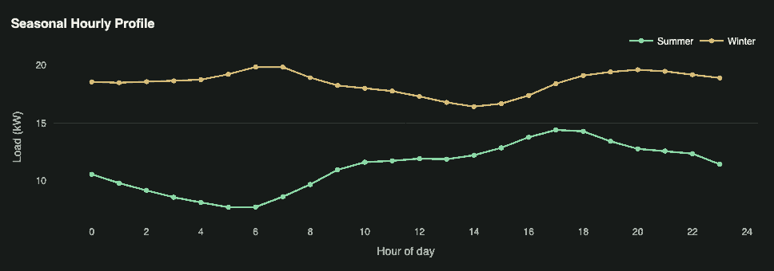
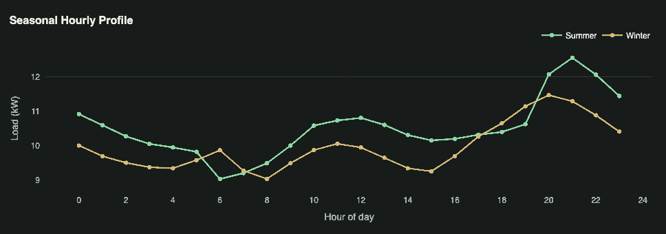
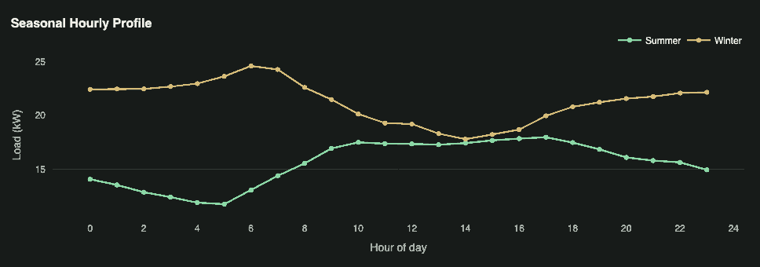
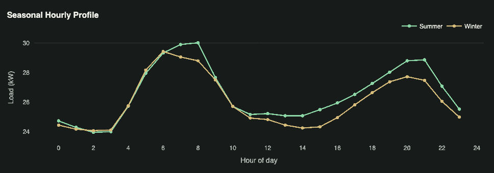

Energy Strategy White Paper
The Flexible Hotel, a Grid Asset
Turning occupancy, timing, and machine learning into economic value — for hotel owners in ComEd/PJM.
Target Bill Reduction
90–100%
Owner Capital Required
$0 down
Asset-Value Lever
$625K
Table of Contents
- 01Executive Summary
- 02What We Do
- 03Why Hotels Are a Distinct Energy System
- 04The Load Shape Is the Asset
- 05Why Hotels Need to Adopt an Energy Strategy
- 06Market Context: Illinois, ComEd & PJM
- 07Solution: The Hotel Energy Intelligence Stack
- 08Driving Immediate Savings
- 09Long-Term Economics
- 10Behind-the-Meter Generation & Storage
- AAppendix: Property Load Profiles
- BSources
Executive Summary
A hotel is not an office building with beds. It is a 24/7 service factory where electricity, gas, and water are converted into sleep quality, hot showers, clean linens, food service, comfort, and brand consistency. That makes energy both a cost center and a product input. The goal is not simply to use less energy — it is to use the right energy, at the right time, in ways guests never notice, all in the effort to increase Net Operating Income (NOI). Because a hotel trades on its NOI, every dollar of energy cost removed raises not just profit but the property’s underlying asset value. EZ NRG is built to deliver that value on an aligned model: we own the enabling asset, the owner saves, with $0 down.
In ComEd/PJM, the value of energy management is increasingly determined not only by annual kWh savings, but by when load occurs, how much flexibility exists, and whether performance can be verified. This white paper argues that machine learning should not be treated as a stand-alone product or an “AI layer.” Its practical role is to coordinate decisions that already have economic value: forecasting load, identifying peak-risk windows, estimating controllable flexibility, detecting waste, improving procurement decisions, and preparing hotels for future demand response, storage, and virtual-power-plant participation. Regulatory reform — including FERC Order 2222 and Illinois storage/VPP policy — creates upside, but the near-term business case rests on existing operational savings, better procurement, and management. The recommended strategy is staged in five steps:
Measure
Normalize interval, weather & occupancy data
Model
Forecast load & flag anomalies
Control
Act within guardrails, comfort first
Monetize
Procurement, peak & DR value
Build
Size solar, storage & CHP last
24/7 Buildings
Hotel energy use is materially influenced by occupancy, but not linearly determined by it. The highest-value forecasting variables are occupancy, weather, service intensity, equipment schedules, and operating constraints. As utility rates become more dynamic (Time-of-Use) and market access grows, this opens the door to a unique opportunity. DOE’s Better Buildings hospitality sector notes that hotels are among the higher energy and water consumers per square foot because they operate continuously, and EIA’s 2018 CBECS lodging data shows that lodging represented 3% of U.S. commercial buildings, 9% of fuels consumption, and 8% of fuels expenditures — while water heating and space heating alone accounted for almost 40% of energy usage.[1][2]
Bridging the Value Gap Through Expertise
Hotel owners are entering a period where energy value is increasingly determined by timing, flexibility, and verifiability rather than only annual kWh savings or supplier contract price. PJM capacity-market volatility has moved from an abstract wholesale issue into a retail procurement issue: the 2025/2026 Base Residual Auction produced a $14.7 billion total cost to load, the 2026/2027 BRA cleared at the $329.17/MW-day UCAP cap, and the 2027/2028 BRA cleared at the temporary $333.44/MW-day UCAP cap while procuring less capacity than the RTO Reliability Requirement. These outcomes don’t flow through identically to every hotel — exposure depends on supplier contract structure, utility treatment, hedging, and rate design — but they make the same point: load shape, peak contribution, and contract structure now matter more than they did in a low-capacity-price environment.
What We Do
We help hotel owners lower electricity cost and reduce market exposure using procurement, bill analysis, interval-data intelligence, and operational peak management — without disrupting guest experience.
Why Hotels Are a Distinct Energy System
A hotel is a service platform, not a generic commercial building.
Unlike many commercial properties, a hotel does not simply consume energy to keep a space open during business hours — it converts energy into a continuous guest experience: conditioned rooms, hot water, clean linens, food service, lighting, ventilation, elevators, technology access, common-area comfort, and brand-required amenity availability. Energy is therefore not just a utility expense; it is an input into the hotel’s core product. DOE and ENERGY STAR hospitality resources identify operations and controls as key energy-management themes for lodging facilities.[1][3] Hotels also carry a mix of fixed, variable, and schedulable loads: common-area lighting, ventilation, refrigeration, IT systems, pumps, elevators, and baseline HVAC are always present, while occupancy, weather, housekeeping, food service, laundry volume, and event schedules drive the rest. A limited-service roadside hotel, a full-service urban hotel, and a resort property may all be classified as “lodging,” but their energy profiles behave very differently.
The key variables are occupancy, weather, and service intensity.
Occupancy changes guest-room HVAC, plug load, domestic hot water, elevators, laundry volume, kitchen activity, and staffing. Weather changes heating and cooling demand, humidity-control requirements, and equipment efficiency. Service intensity changes the non-room load, especially in full-service properties with kitchens, banquet space, laundry, pools, or spas — hotel energy forecasting research has explicitly used occupancy rate and temperature as model inputs, and hotel cooling-energy research confirms the influence of meteorological conditions and guest counts.[4][5] This is why hotel load should not be treated as simply proportional to occupancy: a hotel has a meaningful baseload, and two nights with the same room count can produce different energy outcomes depending on outdoor temperature, event activity, laundry timing, guest behavior, and operating schedules.
This load profile creates an information problem.
A monthly bill shows how much energy was consumed, but not when the hotel created cost, when it had flexibility, or which subsystem caused the deviation. The required foundation is therefore high-resolution interval data, weather, occupancy proxies, and operational context — together, they let a hotel move from reactive bill review to predictive energy management. The question changes from “how much did we spend last month?” to “which hours are likely to create avoidable costs, which systems are driving that risk, and what can we safely do about it without compromising the guest experience?” This is also why an intelligence layer becomes more valuable across a portfolio: one hotel’s interval data can identify local waste and peak-risk patterns, but many similar hotels in the same region reveal stronger ones — how comparable properties respond to weather, how occupancy translates into load, and which interventions are most effective.[6][7] Hotels are not merely buildings to be benchmarked; they are operating systems with measurable demand, controllable flexibility, and repeatable patterns.
The Load Shape Is the Asset
If a hotel’s energy strategy has a single foundation, it is the shape of its load — not the total kilowatt-hours it consumes, but when those kilowatts arrive. Across four metered lodging properties in the ComEd territory, that shape is strikingly consistent, and it points the same direction.
Every one of the four meters set its annual peak in January, and every peak landed in a morning or evening ramp hour — 07:00 and 09:00 on one side of the day, 17:00 and 19:00 on the other780781. None peaked on a summer afternoon. That single fact matters because PJM’s system and capacity peaks fall on hot summer afternoons[8] — the hotel’s load is inverted relative to the grid it buys from. When the grid is most stressed and capacity is most expensive, these properties run near their seasonal minimum; when they hit their own peaks, the wider grid is calm.
The monthly record makes the inversion concrete. For the combined meters detailed in Appendix A5, billing-month peak demand runs 127 kW in January and 98 kW in December but collapses to 46–47 kW across June, July, and August — a winter peak more than 2.5× the summer one. Because delivery (demand) charges are set by each month’s highest kW interval, the property carries its heaviest demand-charge burden in winter, not summer.
Peak-to-Average Ratio
5.1x
Winter vs. Summer Peak
2.5x+
Jan vs. Jul Delivery Charge
$2,540 / $920
Two consequences follow, and they run through the rest of this paper. First, the peaks are peaky — individual meters show peak-to-average ratios as high as 5× (a 101.62 kW peak against a 19.9 kW average)780. A load that spikes far above its own baseline for a handful of ramp hours is, by definition, a load with a large controllable, schedulable slice — the raw material for demand-charge management, demand response, and storage dispatch. Second, because those spikes rarely coincide with the grid’s own peaks, the property is naturally well-positioned on the capacity and coincident-peak exposures that increasingly drive cost.
This is what it means to call a hotel a grid asset rather than a passive ratepayer.
The load shape is not a liability to be minimized; it is an asset to be understood and then monetized — through procurement structured around the real profile, demand-charge reduction targeted at the winter ramp hours, and, eventually, storage sized to the specific hours that carry the cost.
Why Hotels Need to Adopt an Energy Strategy
From 2023 to 2025, one Chicago-area property saw considerable operating improvements — but energy tells a more complicated story than the topline growth suggests.
| Year | OCU | Revenue | ADR | RevPAR | GOP | Net Income |
|---|---|---|---|---|---|---|
| 2023 | 52.5% | $3.2M | $106 | $55.80 | $574,643 | ($406,347) |
| 2024 | 56.4% | $3.7M | $112 | $63.10 | $634,240 | ($578,020) |
| 2025 | 63.2% | $4.3M | $119 | $75.30 | $1,076,857 | ($189,548) |
OCU = occupancy · TR = total revenue · ADR = average daily rate · RevPAR = revenue per available room · GOP = gross operating profit. Net income shown in parentheses where negative.
This Chicago-North hotel improved materially from 2023 to 2025. However, the core finding with respect to energy is that utilities remained highly significant to profitability: in 2025, utilities still represented 21.7% of GOP. The stronger thesis is not simply that hotels should use less energy and “save more money” — it is that hotels need to know which loads are fixed, which are variable, which are weather-driven, which are schedulable, and which are controllable without affecting guest experience.
Financial Implications & Scenarios
| Utility | 2024 | 2025 |
|---|---|---|
| Electricity | $144,649 (3.92% of TR) | $154,748 (3.58% of TR) |
| Natural Gas | $25,849 (0.70% of TR) | $28,189 (0.65% of TR) |
| Water & Sewer | $35,735 (0.97% of TR) | $50,667 (1.17% of TR) |
| Total Utilities | $206,234 (5.6% of TR) | $233,605 (5.4% of TR) |
Electricity, natural gas, and water/sewer are distinct utility line items and are never averaged together.
Because utilities scale against a much smaller profit base than revenue, even a partial reduction moves GOP materially. A full elimination of the electricity line would have moved GOP by double digits in either year:
2024 Electricity as % of GOP
22.8%
2025 Electricity as % of GOP
14.4%
Energy Cost Is an Asset-Value Lever, Not Just a Line Item
Because hotels trade as income-producing assets, these utility figures matter well beyond the income statement. Every recurring dollar removed from operating expense flows directly into Net Operating Income, and stabilized NOI capitalized at the prevailing market cap rate is a primary determinant of a hotel’s value.[9][10] The arithmetic is direct: at an illustrative 8.0% cap rate, a $50,000 reduction in annual utility expense is not merely a $50,000 saving — it represents roughly $625,000 in incremental asset value ($50,000 ÷ 0.08). Energy strategy is not a cost-cutting exercise; it is a balance-sheet lever, and the payoff scales with the property’s valuation multiple.
At EZ NRG, our strategy targets 90–100% reductions to a client’s electricity bill — without the owner taking out loans, and with $0 down. We own the asset. You save.
Market Context: Illinois, ComEd & PJM
Market Structure
Founded in 1927, PJM is the regional grid operator responsible for coordinating the movement of wholesale electricity across a large multi-state region that includes northern Illinois and the ComEd service territory. PJM doesn’t own power plants, local distribution wires, or customer meters — instead, it acts as the independent system operator and market administrator that balances electricity supply and demand in real time, manages transmission-grid reliability, and runs wholesale markets for energy, capacity, and ancillary services.
Power Plant
Generates electricity
Transmission
PJM balances & moves it long-distance
Distribution
ComEd delivers it locally
End User
The hotel meters & pays
Customers usually don’t interact directly with PJM, but PJM outcomes influence the cost structure that eventually flows through to suppliers, utilities, and end-use customers.[11] Its membership includes utility companies, wholesale suppliers, large industrial users, and a growing number of DER aggregators participating on behalf of energy users who couldn’t otherwise access PJM’s markets.[12] In Illinois, ComEd remains responsible for delivering electricity safely and reliably over the local distribution system — even when a customer chooses a third-party retail supplier, ComEd continues to provide delivery service, maintain local wires and infrastructure, and respond to outages.
Why This Matters to a Hotel’s Bill
Energy cost is shaped by more than the supplier’s cents-per-kWh rate. A hotel’s bill can reflect delivery charges, supply charges, capacity-related costs, transmission-related costs, taxes, riders, and contract-specific pass-throughs. PJM doesn’t send the hotel a monthly retail bill, but its markets help determine the underlying wholesale costs that suppliers and utilities must manage — so a hotel’s physical load shape (when it uses electricity, how high its peaks run, how flexible it can be) affects its exposure to costs that originate upstream. When the system is tight, high-demand hours become especially important: a customer that can forecast, reduce, or shift load during those windows may reduce certain cost exposures, improve procurement outcomes, or participate indirectly in demand response through an approved market participant or aggregator. A hotel may be a retail customer on paper, but its operating behavior still has wholesale-market consequences.
Economic Opportunities
Value accrues in layers. The opportunities below ascend from the broadest and lowest-risk — smarter procurement and reduced capacity exposure — through demand response and aggregation, up to the most capital-intensive layer, behind-the-meter assets. Each higher rung depends on the operational intelligence established beneath it, which is why the sequence matters as much as any single tactic.
- 1
Procurement & Capacity Exposure
FERC oversees PJM’s energy, capacity, and ancillary-service markets — understanding them opens opportunities to use energy in grid-wide low-demand hours and less during high demand.[13][14] Beyond monthly demand charges, a hotel’s contribution during a small number of system-wide peak hours can influence future capacity-related charges.
- 2
Demand Response Participation
HVAC, domestic hot water, laundry, pool equipment, and ventilation schedules can often be adjusted for short periods without materially impacting the guest experience when professionally managed.
- 3
Virtual Power Plants & DER Aggregation
Most individual hotels are too small to participate directly in wholesale markets. Aggregators combine hundreds or thousands of sites into a portfolio capable of meeting market participation requirements.
- 4
Behind-the-Meter Asset Optimization
Battery storage, solar, CHP, and thermal storage are valuable not because they store electricity, but because they store it at one moment and deploy it at another — which is why operational intelligence must precede capital deployment.
Retail Choice & Illinois Energy Policy
Illinois has retail electric choice in the major investor-owned utility territories, including ComEd, Ameren Illinois, and MidAmerican — customers can choose who supplies the electricity-supply portion of their service while the local utility remains responsible for delivery, reliability, outage response, and metering.[15] For hotel owners, retail choice should be viewed as a strategic procurement tool rather than a simple rate-shopping exercise: a fixed-price product provides budget certainty but can embed supplier risk premiums, while an indexed or pass-through product exposes the customer more directly to wholesale movement, capacity costs, or other non-energy components. The best product depends on the hotel’s actual operating profile, not only the lowest quoted cents-per-kWh rate.[16] The Clean and Reliable Grid Affordability Act (CRGA, Public Act 104-0458, 2025) creates a policy pathway for energy storage procurement, a Storage for All evaluation, and customer-sited flexibility programs — all directly relevant to hotel earnings. In PJM, DER aggregation for energy and ancillary services is scheduled for February 1, 2028, with capacity-market implementation tied to the 2028/2029 capacity year. A hotel platform that can already measure, forecast, verify, and safely control load will be better positioned as these markets become accessible.
Solution: The Hotel Energy Intelligence Stack
Machine learning is useful when it improves a decision that already has economic value. For hotels, the useful decisions are load forecasting, block sizing, peak-risk alerts, controllable-load estimation, anomaly detection, demand response execution, and behind-the-meter dispatch — an established research area, and NREL’s Wattile project illustrates probabilistic building load forecasting using historical weather and occupancy indicator streams.[17] The four layers below map directly onto the five-step sequence introduced earlier: Data and Intelligence are where the property measures and models; Control is where it acts; Market is where verified performance is monetized. Behind-the-meter assets come last, and only after the first four layers have established what the load is worth.
The Data Layer
- Revenue-grade interval meter data (15-minute or finer)
- Submetering for HVAC, hot water, laundry
- BMS points: temperatures, setpoints, equipment status
- Occupancy & service proxies: PMS room count, bookings, events
- Market data: weather forecasts, PJM day-ahead & real-time prices
The Intelligence Layer
- Baseline modeling
- Probabilistic load forecasting
- Flexibility envelope modeling
- Anomaly detection
- Optimization
The Control Layer
Deterministic execution at the edge; the model recommends, the building only runs pre-approved sequences. Hard guardrails, in order: life safety, guest comfort, equipment protection, cost optimization. OpenADR standardizes DR/DER communication, but local override & fail-safe logic are still required.[18][19]
Baselines
The baseline is the foundation of the entire strategy. A useful baseline can’t rely only on last year’s bills or average monthly usage — it must use interval data, weather, occupancy proxies, and operational context to estimate what load would have been under comparable conditions. A 90%-occupancy day in July should not be compared directly to a 45%-occupancy day in April.
Forecast Accuracy
A model may show acceptable average error across the month but still fail during the highest-value hours, so it should measure peak-hour error and confidence-band performance — and know when operator review is required. Accuracy should improve as more interval, occupancy, weather, and event data accumulate.
Driving Immediate Savings
Electricity Procurement
Retail electricity choice has been a contentious topic in states across the United States, with critics questioning its effectiveness — often due to the conflict of interest a broker has in serving their clients. EZ NRG aligns those interests in a verifiable, autonomous manner, so our incentive remains to serve you.
Real-Time Pricing
Electricity procurement deals with securing forward contracts for future usage. Pre-existing structures also combine a fixed procurement with a real-time balancing mechanism — complex and costly enough that they’re typically reserved for industrial-scale customers. But these structures would be especially beneficial to hospitality owners given the nature of their load shape: because hospitality load runs inverted relative to grid-wide usage — peaking during morning and evening ramp hours rather than summer afternoons780781 — hospitality properties have a real opportunity to leverage this fact. By aggregating properties, EZ NRG can act as the aggregator, adding value to hospitality owners through futures hedging, options contracts, and more.
We analyzed over 25,000 days of data from hotel owners in the Chicagoland region and correlated their interval usage with ComEd real-time pricing data. We found their average price could have been $2.96 per kWh (before capacity and transmission fees) had an energy strategy partner helped them confidently enroll in the program. Real-time pricing does carry downsides — severe peaks during grid-stressed events and added billing complexity from settling interval data against real-time prices — but not leveraging the real-time market, or at least negotiating smarter procurement contracts, is money left on the table for property owners.
Modeled Average Price
$2.96/kWh
Before capacity & transmission fees · 25,000+ property-days analyzed, Chicagoland region
Long-Term Economics
A Waterfall of Value Creation That Compounds
Because of our vision for a stakeholder-led, decentralized energy business model, the economic benefits for our clients compound over time with each partner and with growth. The initial phase is designed to reduce upfront owner risk by focusing first on data access, bill analysis, interval-load review, and low-risk operational recommendations before any capital deployment or market obligation.[22][23][20][24][25]
Potential Economic Benefits
The future is hard to predict, and the following is for illustrative purposes only. If a hotel owner were to install a 100 kW battery and offer it as a demand response product to PJM, at the most recent price of $333.44/MW-day, the gross contracted earnings would look like this:
Daily Gross Capacity Revenue
$30.68
Annual Gross Capacity Revenue
$11,196.92
Demand Charge Reduction
$9,600/yr
Demand charge reduction assumes 40 kW shaved per month at $20/kW.
While these figures may not seem significant on their own, this roughly $20,000 per year could instead fund sales-agency spend for additional bookings — and it doesn’t account for other market revenues (ancillary, energy, arbitrage). As rates continue to rise, this becomes a real profit lever for increasing income and asset value.
Behind-the-Meter Generation & Storage: Sequence Matters
Behind-the-meter assets should be sized after the load is understood. Their financial value depends on when output or discharge coincides with avoided energy costs, demand charges, capacity exposure, DR events, tariff rules, interconnection limits, and emissions goals.[17][21][25][27]
Solar Considerations
Solar is not automatically a peak hedge. DOE’s discussion of the duck curve explains that high solar production can reduce net load during the day while demand ramps in the evening after solar falls off — a reason to analyze timing before maximizing system size.[26]
Storage Considerations
Battery value is primarily a timing problem. NREL research identifies demand charges as a key predictor of financial performance for behind-the-meter battery storage, and EIA explains that battery arbitrage means charging when prices are low and discharging when prices are high.[25][27] In hotels, the same asset may support peak management, DR performance, solar self-consumption, resilience planning, and tariff optimization — but those use cases must be stacked carefully. Given the unique load shapes of hotel properties780781, storage offers owners unusual flexibility in reducing demand charges while using headroom that sits unused much of the year.
Recommended Sequencing
- 1
Measure
Create clean whole-building and major-end-use interval data.
- 2
Model
Forecast load, estimate uncertainty, and identify marginal-value hours.
- 3
Control
Test low-risk operating strategies with comfort and equipment guardrails.
- 4
Monetize
Use performance records for procurement, peak-risk management, and DR participation.
- 5
Build
Size storage and other strategies only after the first four steps establish the value stack.
Considerations
The evolution of electricity markets has never been instantaneous. Regulatory frameworks develop through a deliberate process involving utilities, regulators, grid operators, consumer advocates, market participants, and policymakers — and while that can slow implementation, the process exists to preserve reliability, ensure fair competition, and avoid unintended consequences. FERC Order 2222 was issued in September 2020, and regional market operators have begun implementing compliance frameworks, but full market participation for aggregated distributed energy resources remains a multi-year undertaking; in PJM, implementation continues in phases, with current timelines extending into 2028 for full functionality. We acknowledge the uncertainty in timing, market design, participation requirements, and the economic value ultimately available to our stakeholders.
We don’t try to time the market. We become the market by serving our customers.
We believe uncertainty should be acknowledged rather than ignored. As stewards of our stakeholders’ capital, we view regulatory developments as opportunities, not assumptions — so we proceed cautiously, focusing on strategies that generate measurable value under today’s market structure while maintaining optionality for future participation. Our business model does not depend on the successful implementation of any single regulatory initiative: the core economics come from improving energy procurement, reducing operating expenses, forecasting load more accurately, optimizing consumption patterns, and identifying operational inefficiencies — benefits that can be realized immediately, under existing market rules. Should Order 2222 and similar reforms unlock additional opportunities for distributed energy resources, demand flexibility, virtual power plants, or wholesale market participation, our platform is designed to capture them. If timelines shift or market structures evolve differently than anticipated, the underlying value proposition is unchanged: lower energy costs, reduced volatility, improved operational intelligence, and stronger asset performance. Regulatory change represents upside, not a prerequisite.
Appendix: Property Load Profiles
Four meters, four ComEd-territory lodging properties — all showing the same shape: a January peak, a summer trough, and ramp-hour spikes rather than summer-afternoon ones. Each chart plots average hourly load across summer days versus winter days.
Customer 1 · Meter 780
Peak Demand
101.62 kW
Jan 14, 2024 · 17:00
Average Load
19.9 kW
731 days coverage

Customer 1 · Meter 781
Peak Demand
26.00 kW
Jan 13, 2024 · 19:00
Average Load
10.1 kW

Customer 2 · Meter 542
Peak Demand
84.35 kW
Jan 15, 2024 · 07:00
Average Load
16.7 kW

Customer 2 · Meter 571
Peak Demand
45.96 kW
Jan 1, 2024 · 09:00
Average Load
26.2 kW

Appendix A5 — Illustrative Monthly Cost Proxy (Meters 780 & 781 Combined)
Illustrative demand and energy cost proxy, not a full ComEd bill reconstruction — excludes capacity, transmission, taxes, riders, and other supplier-specific pass-throughs. Delivery charges assume $20/kW on the billing month’s highest kW interval; energy charges assume $0.08/kWh.
| Month | Peak kW | D-Charges | kWh | E-Charges | Total |
|---|---|---|---|---|---|
| January | 127 | $2,540 | 42,377 | $3,390 | $5,930 |
| February | 114 | $2,280 | 31,752 | $2,540 | $4,820 |
| March | 77 | $1,540 | 20,371 | $1,630 | $3,170 |
| April | 76 | $1,520 | 15,600 | $1,248 | $2,768 |
| May | 47 | $940 | 10,224 | $820 | $1,760 |
| June | 46 | $920 | 11,017 | $881 | $1,801 |
| July | 46 | $920 | 13,955 | $1,116 | $2,036 |
| August | 47 | $940 | 16,628 | $1,330 | $2,270 |
| September | 38 | $760 | 15,037 | $1,203 | $1,963 |
| October | 80 | $1,600 | 14,257 | $1,141 | $2,741 |
| November | 78 | $1,560 | 10,637 | $851 | $2,411 |
| December | 98 | $1,960 | 36,088 | $2,887 | $4,847 |
| Total | — | $17,480 | 237,943 | $19,037 | $36,517 |
Sources
Numbered to match the citation marks used throughout this report.
- [1]U.S. Department of Energy, Better Buildings Solution Center, “Hospitality.”
- [2]U.S. Energy Information Administration, 2018 CBECS, Principal Building Activities: Lodging.
- [3]ENERGY STAR, “Energy Savings Tips for Small Businesses: Lodging.”
- [4]Casteleiro-Roca et al., “Short-Term Energy Demand Forecast in Hotels Using Hybrid Intelligent Modeling,” Sensors, 2019.
- [5]Borowski et al., “Prediction of Cooling Energy Consumption in Hotel Building Using Machine Learning Techniques,” Energies, 2020.
- [6]U.S. Department of Energy FEMP, “M&V Guidelines: Measurement and Verification for Federal Energy Projects,” Version 5.0.
- [7]Zhang et al., “A Review of Machine Learning in Building Load Prediction,” Applied Energy, 2021 / OSTI.
- [8]PJM, “Summer 2025 RTO Coincident Peaks (5CP).”
- [9]Freddie Mac Multifamily, “Capitalization Rate Guidance,” March 2025.
- [10]HVS, “Hotel Valuation Techniques.”
- [11]PJM, “PJM at a Glance.”
- [12]PJM, “Distributed Energy Resources.”
- [13]Federal Energy Regulatory Commission, “PJM” market overview.
- [14]PJM, “Understanding the Differences Among PJM’s Markets,” fact sheet.
- [15]Plug In Illinois, Illinois Commerce Commission electric-choice website, “Electric Choice Basics.”
- [16]ComEd, “Understanding Your Electric Bill: A Discussion With a ComEd Expert.”
- [17]NREL, “Wattile: Probabilistic Deep Learning-Based Forecasting of Building Energy Consumption.”
- [18]LBNL / ACEEE, Watson et al., “Strategies for Demand Response in Commercial Buildings.”
- [19]OpenADR Alliance, overview of the Open Automated Demand Response standard.
- [20]PJM, “Demand Response,” fact sheet.
- [21]Lawrence Berkeley National Laboratory, “Demand Flexibility.”
- [22]PJM, “2025/2026 Base Residual Auction Report.”
- [23]PJM, “2026/2027 Base Residual Auction Report.”
- [24]CME Group, “Henry Hub Natural Gas Futures Overview.”
- [25]NREL, “Identifying Potential Markets for Behind-the-Meter Battery Energy Storage: A Survey of U.S. Demand Charges.”
- [26]U.S. Department of Energy, “Confronting the Duck Curve: How to Address Over-Generation of Solar Energy.”
- [27]U.S. Energy Information Administration, “Utility-Scale Batteries Are More Commonly Used for Price Arbitrage.”